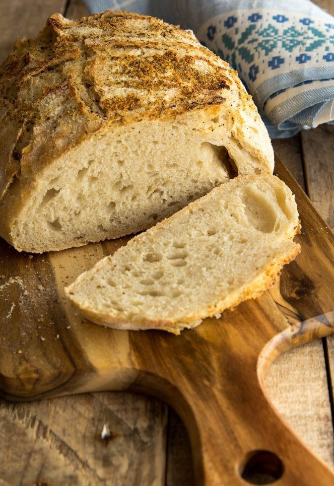
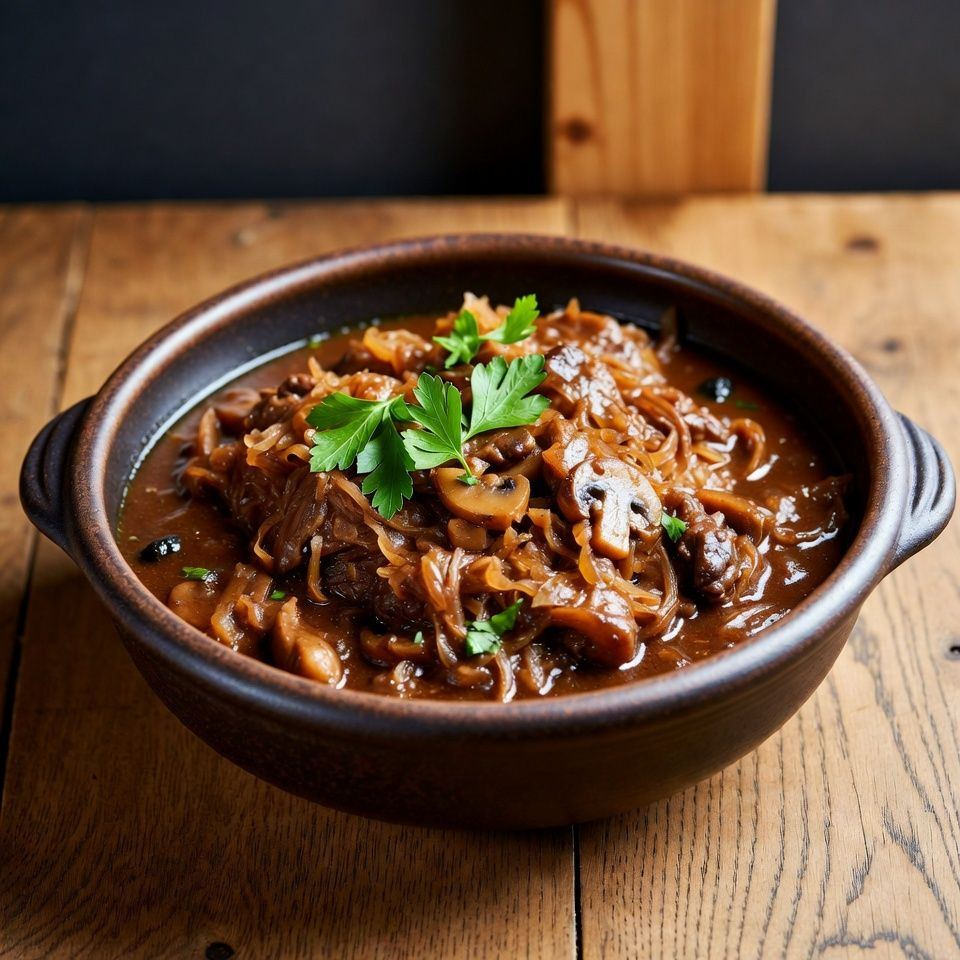
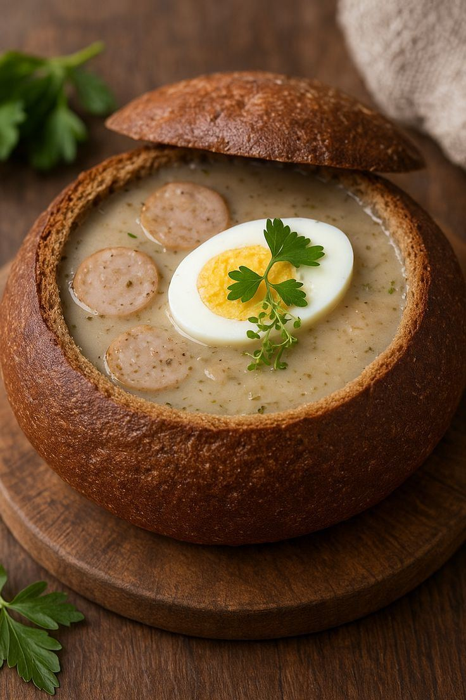
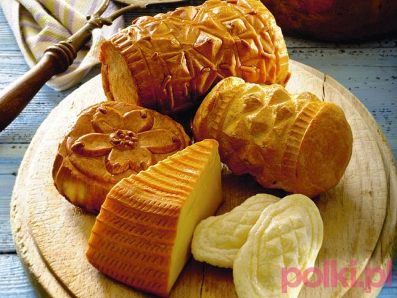
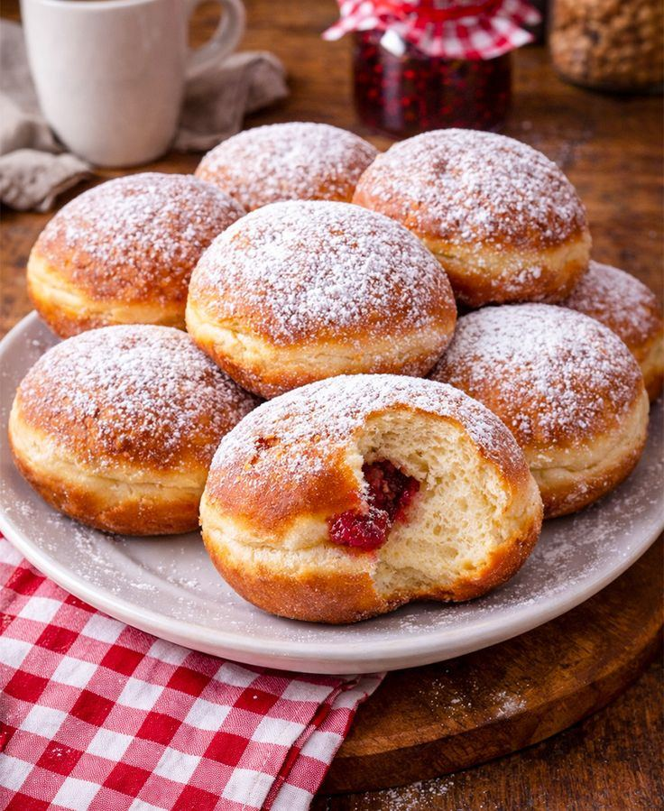

Gastronomie
La cuisine polonaise
Une cuisine généreuse et réconfortante, à découvrir dans les bars à lait, les restaurants montagnards et les marchés.
À goûter
6 plats à ne pas manquer
Pierogi
Des raviolis farcis à la pomme de terre et au fromage, à la viande ou aux fruits.

Bigos
Le « plat du chasseur » : chou, viandes et champignons mijotés longtemps.

Żurek
Une soupe aigre au levain, servie avec un œuf et de la saucisse, souvent dans un pain.
Gołąbki
Des feuilles de chou farcies à la viande et au riz, avec une sauce tomate.

Oscypek
Le fromage fumé des Tatras, grillé et servi avec de la confiture d’airelles.

Pączki
Des beignets à la confiture de rose, que tout le monde mange le « Jeudi gras ».
Apprends avec Smok
Les mots du restaurant
Pose toutes tes questions à Smok : il traduit en polonais tout ce que tu veux, avec la prononciation.
Parler avec Smok- Smacznego ![smatch-nè-go]= Bon appétit !
- Poproszę…[po-pro-chè]= Je voudrais…
- Rachunek[ra-hou-nèk]= L'addition
- Pyszne ![pich-nè]= Délicieux !